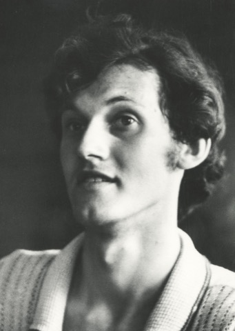

Metų laikai
Poezija. Pirmoji knyga.

Poetas · eseistas · redaktorius
1958 – 1995
Žurnalo „Krantai“ įkūrėjas, almanacho „Veidai“ sumanytojas, atkurtos „Naujosios Romuvos“ redaktorius – vienas ryškiausių Atgimimo laikotarpio kultūros telkėjų.
Vaidotas Daunys gimė 1958 m. sausio 2 d. Rokiškyje, etnografo ir poeto Stasio Daunio bei lituanistės Joanos Daunienės šeimoje. Mokėsi Kauno II vidurinėje mokykloje (dabar Maironio gimnazija), o nuo 1972 m. – Rumšiškėse. Pirmieji jo eilėraščiai periodikoje pasirodė, kai jam buvo vos devyneri; šešiolikos parašė istorinę dramą „Krėva“.
1981 m. baigė lietuvių kalbos ir literatūros studijas Vilniaus universitete ir pradėjo dirbti žurnalo „Pergalė“ redakcijoje. Netrukus ėmėsi burti jaunąją kūrėjų kartą: rengė almanachą „Veidai“, vadovavo Vilniaus jaunųjų rašytojų sekcijai.
1988 m. rudenį įkūrė meno ir kultūros žurnalą „Krantai“, kuris, jungdamas įvairias meno sritis, tapo vienu ryškiausių atgimstančios lietuvių kultūros ženklų. 1991 m. su bendraminčiais įsteigė fondą „Regnum“ – su leidykla, almanachu ir kamerinės muzikos ansambliu. Nuo 1992 m. kas savaitę rašė esė dienraščio „Lietuvos rytas“ šeštadienio skilčiai „Šeštoji diena“, o 1994 m. atgaivino tarpukario žurnalą „Naujoji Romuva“ ir tapo jo vyriausiuoju redaktoriumi.
Jo poezijai būdingi etiniai ieškojimai, dabarties ir praeities sąsaja, filosofiškumas, vėliau – religiniai motyvai. Vertė Adomo Mickevičiaus, Osipo Mandelštamo ir Pranciškaus Asyžiečio kūrinius.
Vaidotas Daunys žuvo 1995 m. liepos 29 d. Vilniuje, Vingio parke, per aerostatų varžybas, skirtas V Pasaulio lietuvių sporto žaidynėms. Jam buvo 37-eri. Palaidotas Rumšiškių kapinėse, ant Kauno marių kranto. 1996 m. po mirties įvertintas Gabrielės Petkevičaitės-Bitės literatūrine premija.
Sausio 2 d. gimsta Rokiškyje.
Mokosi Kauno II vidurinėje mokykloje.
Periodikoje pasirodo pirmieji eilėraščiai.
Mokosi Rumšiškių vidurinėje mokykloje.
Studijuoja lietuvių kalbą ir literatūrą Vilniaus universitete.
Žurnalo „Pergalė“ skyriaus redaktorius.
Žurnale „Nemunas“ išspausdinamas ciklas „Metų laikai“.
Išleidžiama pirmoji poezijos knyga „Metų laikai“.
Rengia ir redaguoja jaunųjų kultūros almanachą „Veidai“ (5 knygos).
Žurnalo „Žvaigždutė“ vyriausiasis redaktorius.
Įkuria meno ir kultūros žurnalą „Krantai“; vyr. redaktorius iki 1995 m.
Su draugais įsteigia fondą „Regnum“.
Rašo savaitinę esė skiltį „Šeštoji diena“ dienraštyje „Lietuvos rytas“.
Išleidžiamas esė ir fotografijų albumas „Vilnius. Vardas ir žodis“ (su V. Balčyčiu).
Atkurto žurnalo „Naujoji Romuva“ vyriausiasis redaktorius.
Liepos 29 d. žūva Vilniuje. Išleidžiama esė knyga „Šeštoji diena“.
Po mirties – G. Petkevičaitės-Bitės literatūrinė premija.
Poezija. Pirmoji knyga.
Medžiaga lektoriui.
Esė ir fotografijų albumas su Vytautu Balčyčiu. Išleistas ir lenkiškai – „Wilno: imię i słowo“.
Esė rinktinė iš „Lietuvos ryto“ skilties.
Poezijos rinktinė.
Literatūros kritika.
Mokyklinių metų poezijos rinktinė.
Straipsniai, pokalbiai, esė.
Taip pat – drama „Krėva“, novelės, vertimai iš A. Mickevičiaus, O. Mandelštamo ir Pranciškaus Asyžiečio kūrybos.
Nuotraukų autorė – Onutė Pajedaitė. Datos tikslinamos.

Smuikininkė ir muzikos pedagogė Raimonda Daunienė prisimena Vaidotą Daunį – jo asmenybę, kūrybinį kelią, ryšį su šeima ir draugais, tikėjimo vietą jo gyvenime ir kūryboje. Violončelininkė Elena Daunytė pasakoja apie tėvo įtaką, pristato savo poezijos rinkinį „33 įkvėpimai“ ir skaito savo eilėraštį „Įkvėpime“. Skamba ir Vaidoto Daunio eilėraštis „Šventoji“ iš rinkinio „Kelio ženklai“. Pabaigoje apžvelgiamos šeimos fotografijos.
Įrašą parengė Lietuvos centrinis valstybės archyvas; susitikimą vedė vyresnioji archyvistė Larisa Dmuchovskaja, filmavo Vaidotas Digimas.
▶ Žiūrėti e-kinas.ltInformacija apie fondą, jo tikslus ir veiklą ruošiama.